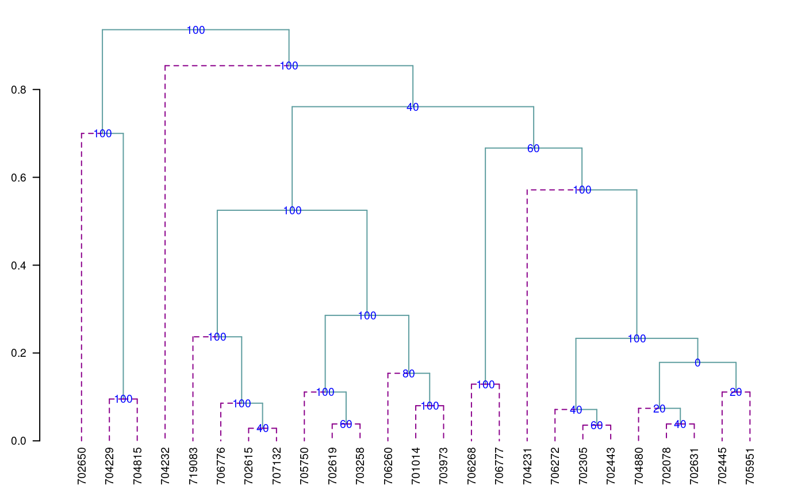

Special Functions in agricolae
Felipe de Mendiburu1, Muhammad Yaseen2
2020-05-01
Source:vignettes/SpecialFunctions.Rmd
SpecialFunctions.Rmd
- Professor of the Academic Department of Statistics and Informatics of the Faculty of Economics and Planning.National University Agraria La Molina-PERU.
- Department of Mathematics and Statistics, University of Agriculture Faisalabad, Pakistan.
Special Functions
Consensus of dendrogram
Consensus is the degree or similarity of the vertexes of a tree regarding its branches of the constructed dendrogram. The function to apply is consensus().
The data correspond to a table, with the name of the individuals and the variables in the rows and columns respectively. For the demonstration, we will use the pamCIP data of agricolae, which correspond to molecular markers of 43 entries of a germplasm bank (rows) and 107 markers (columns).
The program identifies duplicates in the rows and can operate in both cases. The result is a dendrogram, in which the consensus percentage is included, see Figure @ref(fig:f7).
oldpar<-par(cex=0.6,mar=c(3,3,2,1)) data(pamCIP) rownames(pamCIP)<-substr(rownames(pamCIP),1,6) output<-consensus(pamCIP,distance="binary", method="complete", nboot=5)
Duplicates: 18
New data : 25 Records
Consensus hclust
Method distance: binary
Method cluster : complete
rows and cols : 25 107
n-bootstrap : 5
Run time : 0.5958719 secs
Dendrogram, production by consensus
par(oldpar)
When the dendrogram is complex, it is convenient to extract part of it with the function hcut(), see Figure @ref(fig:f8).
oldpar<-par(cex=0.6,mar=c(3,3,1.5,1)) out1<- hcut(output,h=0.4,group=8,type="t",edgePar = list(lty=1:2, col=colors()[c(42,84)]), main="group 8" ,col.text="blue",cex.text=1,las=1)
Dendrogram, production by hcut()
par(oldpar)
The obtained object “output” contains information about the process:
names(output)
[1] "table.dend" "dendrogram" "duplicates"Construct a classic dendrogram, execute procedure in R
use the previous result ‘output’
dend <- as.dendrogram(output$dendrogram) data <- output$table.dend head(output$table.dend)
X1 X2 xaxis height percentage groups
1 -6 -24 7.50 0.02857143 40 6-24
2 -3 -4 19.50 0.03571429 60 3-4
3 -2 -8 22.50 0.03846154 40 2-8
4 -7 -10 10.50 0.03846154 60 7-10
5 -21 2 18.75 0.07142857 40 3-4-21
6 -16 3 21.75 0.07407407 20 2-8-16oldpar<-par(mar=c(3,3,1,1),cex=0.6) plot(dend,type="r",edgePar = list(lty=1:2, col=colors()[c(42,84)]) ,las=1) text(data[,3],data[,4],data[,5],col="blue",cex=1)

par(oldpar)
Montecarlo
It is a method for generating random numbers of an unknown distribution. It uses a data set and, through the cumulative behavior of its relative frequency, generates the possible random values that follow the data distribution. These new numbers are used in some simulation process.
The probability density of the original and simulated data can be compared, see Figure @ref(fig:f9).
data(soil) # set.seed(9473) simulated <- montecarlo(soil$pH,1000) h<-graph.freq(simulated,nclass=7,plot=FALSE)
oldpar<-par(mar=c(2,0,2,1),cex=0.6) plot(density(soil$pH),axes=FALSE,main="pH density of the soil\ncon Ralstonia",xlab="",lwd=4) lines(density(simulated), col="blue", lty=4,lwd=4) axis(1,0:12) legend("topright",c("Original","Simulated"),lty=c(1,4),col=c("black", "blue"), lwd=4)
Distribution of the simulated and the original data
par(oldpar)
1000 data was simulated, being the frequency table:
round(table.freq(h),2)
Lower Upper Main Frequency Percentage CF CPF
1 1.30 2.64 1.97 19 1.9 19 1.9
2 2.64 3.98 3.31 107 10.7 126 12.6
3 3.98 5.32 4.65 235 23.5 361 36.1
4 5.32 6.66 5.99 214 21.4 575 57.5
5 6.66 8.00 7.33 230 23.0 805 80.5
6 8.00 9.34 8.67 165 16.5 970 97.0
7 9.34 10.68 10.01 30 3.0 1000 100.0Some statistics, original data:
summary(soil$pH)
Min. 1st Qu. Median Mean 3rd Qu. Max.
3.800 4.700 6.100 6.154 7.600 8.400 Some statistics, montecarlo simulate data:
summary(simulated)
Min. 1st Qu. Median Mean 3rd Qu. Max.
1.345 4.737 6.149 6.175 7.698 10.620 Re-Sampling in linear model
It uses the permutation method for the calculation of the probabilities of the sources of variation of ANOVA according to the linear regression model or the design used. The principle is that the Y response does not depend on the averages proposed in the model; hence, the Y values can be permutated and many model estimates can be constructed. On the basis of the patterns of the random variables of the elements under study, the probability is calculated in order to measure the significance.
For a variance analysis, the data should be prepared similarly. The function to use is: resampling.model().
data(potato) potato[,1]<-as.factor(potato[,1]) potato[,2]<-as.factor(potato[,2]) model<-"cutting~variety + date + variety:date" analysis<-resampling.model(model, potato, k=100) Xsol<-as.matrix(round(analysis$solution,2)) print(Xsol,na.print = "")
Df Sum Sq Mean Sq F value Pr(>F) Resampling
variety 1 25.09 25.09 7.26 0.02 0.01
date 2 13.89 6.95 2.01 0.18 0.19
variety:date 2 4.85 2.43 0.70 0.51 0.56
Residuals 12 41.48 3.46 The function resampling.model() can be used when the errors have a different distribution from normal.
Simulation in linear model
Under the assumption of normality, the function generates pseudo experimental errors under the proposed model, and determines the proportion of valid results according to the analysis of variance found.
The function is: simulation.model(). The data are prepared in a table, similarly to an analysis of variance.
Considering the example proposed in the previous procedure:
simModel <- simulation.model(model, potato, k=100,console=TRUE)
Simulation of experiments
Under the normality assumption
- - - - - - - - - - - - - - - -
Proposed model: cutting~variety + date + variety:date
Analysis of Variance Table
Response: cutting
Df Sum Sq Mean Sq F value Pr(>F)
variety 1 25.087 25.0868 7.2580 0.01952 *
date 2 13.892 6.9459 2.0096 0.17671
variety:date 2 4.853 2.4265 0.7020 0.51484
Residuals 12 41.477 3.4564
---
Signif. codes: 0 '***' 0.001 '**' 0.01 '*' 0.05 '.' 0.1 ' ' 1
---
Validation of the analysis of variancia for the proposed model
Simulations: 100
Df F value % Acceptance % Rejection Criterion
variety 1 7.2580377 58 42 acceptable
date 2 2.0095604 64 36 acceptable
variety:date 2 0.7020312 65 35 acceptable
---The validation is referred to the percentage of decision results equal to the result of the ANOVA decision. Thus, 65% of the results simulated on the interaction variety*date gave the same result of acceptance or rejection obtained in the ANOVA.
Path Analysis
It corresponds to the “path analysis” method. The data correspond to correlation matrices of the independent ones with the dependent matrix (XY) and between the independent ones (XX).
It is necessary to assign names to the rows and columns in order to identify the direct and indirect effects.
corr.x<- matrix(c(1,0.5,0.5,1),c(2,2)) corr.y<- rbind(0.6,0.7) names<-c("X1","X2") dimnames(corr.x)<-list(names,names) dimnames(corr.y)<-list(names,"Y") output<-path.analysis(corr.x,corr.y)
Direct(Diagonal) and indirect effect path coefficients
======================================================
X1 X2
X1 0.3333333 0.2666667
X2 0.1666667 0.5333333
Residual Effect^2 = 0.4266667 output$Coeff
X1 X2
X1 0.3333333 0.2666667
X2 0.1666667 0.5333333
$Residual
[1] 0.4266667Line X Tester
It corresponds to a crossbreeding analysis of a genetic design. The data should be organized in a table. Only four columns are required: repetition, females, males, and response. In case it corresponds to progenitors, the females or males field will only be filled with the corresponding one. See the heterosis data (Singh and Chaudhary, 1979).
Example with the heterosis data, locality 2
Replication Female Male v2
109 1 LT-8 TS-15 2.65s
110 1 LT-8 TPS-13 2.26
...
131 1 Achirana TPS-13 3.55
132 1 Achirana TPS-67 3.05
...
140 1 Achirana <NA> 3.35
...
215 3 <NA> TPS-67 2.91where <NA> is empty.
If it is a progeny, it comes from a “Female” and a “Male.” If it is a progenitor, it will only be “Female” or “Male.”
The following example corresponds to data of the locality 2:
24 progenies 8 females 3 males 3 repetitions
They are 35 treatments (24, 8, 3) applied to three blocks.
'data.frame': 324 obs. of 11 variables:
$ Place : num 1 1 1 1 1 1 1 1 1 1 ...
$ Replication: num 1 1 1 1 1 1 1 1 1 1 ...
$ Treatment : num 1 2 3 4 5 6 7 8 9 10 ...
$ Factor : Factor w/ 3 levels "Control","progenie",..: 2 2 2 2 2 2 2 2 2 2 ...
$ Female : Factor w/ 8 levels "Achirana","LT-8",..: 2 2 2 6 6 6 7 7 7 8 ...
$ Male : Factor w/ 3 levels "TPS-13","TPS-67",..: 3 1 2 3 1 2 3 1 2 3 ...
$ v1 : num 0.948 1.052 1.05 1.058 1.123 ...
$ v2 : num 1.65 2.2 1.88 2 2.45 2.63 2.75 3 2.51 1.93 ...
$ v3 : num 17.2 17.8 15.6 16 16.5 ...
$ v4 : num 9.93 12.45 9.3 12.77 14.13 ...
$ v5 : num 102.6 107.4 120.5 83.8 90.4 ...site2<-subset(heterosis,heterosis[,1]==2) site2<-subset(site2[,c(2,5,6,8)],site2[,4]!="Control") output1<-with(site2,lineXtester(Replication, Female, Male, v2))
ANALYSIS LINE x TESTER: v2
ANOVA with parents and crosses
==============================
Df Sum Sq Mean Sq F value Pr(>F)
Replications 2 0.5192 0.2596 9.80 0.0002
Treatments 34 16.1016 0.4736 17.88 0.0000
Parents 10 7.7315 0.7731 29.19 0.0000
Parents vs. Crosses 1 0.0051 0.0051 0.19 0.6626
Crosses 23 8.3650 0.3637 13.73 0.0000
Error 68 1.8011 0.0265
Total 104 18.4219
ANOVA for line X tester analysis
================================
Df Sum Sq Mean Sq F value Pr(>F)
Lines 7 4.98 0.711 3.6 0.019
Testers 2 0.65 0.325 1.7 0.226
Lines X Testers 14 2.74 0.196 7.4 0.000
Error 68 1.80 0.026
ANOVA for line X tester analysis including parents
==================================================
Df Sum Sq Mean Sq F value Pr(>F)
Replications 2 0.5192 0.2596 9.80 0.0002
Treatments 34 16.1016 0.4736 17.88 0.0000
Parents 10 7.7315 0.7731 29.19 0.0000
Parents vs. Crosses 1 0.0051 0.0051 0.19 0.6626
Crosses 23 8.3650 0.3637 13.73 0.0000
Lines 7 4.9755 0.7108 3.63 0.0191
Testers 2 0.6494 0.3247 1.66 0.2256
Lines X Testers 14 2.7401 0.1957 7.39 0.0000
Error 68 1.8011 0.0265
Total 104 18.4219
GCA Effects:
===========
Lines Effects:
Achirana LT-8 MF-I MF-II Serrana TPS-2 TPS-25 TPS-7
0.022 -0.338 0.199 -0.449 0.058 -0.047 0.414 0.141
Testers Effects:
TPS-13 TPS-67 TS-15
0.087 0.046 -0.132
SCA Effects:
===========
Testers
Lines TPS-13 TPS-67 TS-15
Achirana 0.061 0.059 -0.120
LT-8 -0.435 0.519 -0.083
MF-I -0.122 -0.065 0.187
MF-II -0.194 0.047 0.148
Serrana 0.032 -0.113 0.081
TPS-2 0.197 -0.072 -0.124
TPS-25 0.126 -0.200 0.074
TPS-7 0.336 -0.173 -0.162
Standard Errors for Combining Ability Effects:
=============================================
S.E. (gca for line) : 0.054
S.E. (gca for tester) : 0.033
S.E. (sca effect) : 0.094
S.E. (gi - gj)line : 0.077
S.E. (gi - gj)tester : 0.047
S.E. (sij - skl)tester: 0.13
Genetic Components:
==================
Cov H.S. (line) : 0.057
Cov H.S. (tester) : 0.0054
Cov H.S. (average): 0.0039
Cov F.S. (average): 0.13
F = 0, Adittive genetic variance: 0.015
F = 1, Adittive genetic variance: 0.0077
F = 0, Variance due to Dominance: 0.11
F = 1, Variance due to Dominance: 0.056
Proportional contribution of lines, testers
and their interactions to total variance
===========================================
Contributions of lines : 59
Contributions of testers: 7.8
Contributions of lxt : 33 options(digits = 7)
Soil Uniformity
The Smith index is an indicator of the uniformity, used to determine the parcel size for research purposes. The data correspond to a matrix or table that contains the response per basic unit, a number of n rows x m columns, and a total of n*m basic units.
For the test, we will use the rice file. The graphic is a result with the adjustment of a model for the plot size and the coefficient of variation, see Figure @ref(fig:f10).
oldpar<-par(mar=c(3,3,4,1),cex=0.7) data(rice) table<-index.smith(rice, col="blue", main="Interaction between the CV and the plot size",type="l",xlab="Size")

Adjustment curve for the optimal size of plot
par(oldpar)
uniformity <- data.frame(table$uniformity) head(uniformity)
Size Width Length plots Vx CV
1 1 1 1 648 9044.539 13.0
2 2 1 2 324 7816.068 12.1
3 2 2 1 324 7831.232 12.1
4 3 1 3 216 7347.975 11.7
5 3 3 1 216 7355.216 11.7
6 4 1 4 162 7047.717 11.4Confidence Limits In Biodiversity Indices
The biodiversity indices are widely used for measuring the presence of living things in an ecological area. Many programs indicate their value. The function of agricolae is also to show the confidence intervals, which can be used for a statistical comparison. Use the bootstrap procedure. The data are organized in a table; the species are placed in a column; and in another one, the number of individuals. The indices that can be calculated with the function index.bio() of agricolae are: Margalef, Simpson.Dom, Simpson.Div, Berger.Parker, McIntosh, and Shannon.
In the example below, we will use the data obtained in the locality of Paracsho, district of Huasahuasi, province of Tarma in the department of Junin.
The evaluation was carried out in the parcels on 17 November 2005, without insecticide application. The counted specimens were the following:
data(paracsho) species <- paracsho[79:87,4:6] species
Orden Family Number.of.specimens
79 DIPTERA TIPULIDAE 3
80 LEPIDOPTERA NOCTUIDAE 1
81 NOCTUIDAE PYRALIDAE 3
82 HEMIPTERA ANTHOCORIDAE 1
83 DIPTERA TACHINIDAE 16
84 DIPTERA ANTHOCORIDAE 3
85 DIPTERA SCATOPHAGIDAE 5
86 DIPTERA SYRPHIDAE 1
87 DIPTERA MUSCIDAE 3The Shannon index is:
output <- index.bio(species[,3],method="Shannon",level=95,nboot=200)
Method: Shannon
The index: 2.541336
95 percent confidence interval:
2.182006 ; 3.091759 Correlation
The function correlation() of agricolae makes the correlations through the methods of Pearson, Spearman and Kendall for vectors and/or matrices. If they are two vectors, the test is carried out for one or two lines; if it is a matrix one, it determines the probabilities for a difference, whether it is greater or smaller.
For its application, consider the soil data: data(soil).
data(soil) correlation(soil[,2:4],method="pearson")
$correlation
pH EC CaCO3
pH 1.00 0.55 0.73
EC 0.55 1.00 0.32
CaCO3 0.73 0.32 1.00
$pvalue
pH EC CaCO3
pH 1.000000000 0.0525330 0.004797027
EC 0.052532997 1.0000000 0.294159813
CaCO3 0.004797027 0.2941598 1.000000000
$n.obs
[1] 13with(soil,correlation(pH,soil[,3:4],method="pearson"))
$correlation
EC CaCO3
pH 0.55 0.73
$pvalue
EC CaCO3
pH 0.0525 0.0048
$n.obs
[1] 13tapply.stat()
Gets a functional calculation of variables grouped by study factors.
Application with agricolae data
max(yield)-min(yield) by farmer
data(RioChillon) with(RioChillon$babies,tapply.stat(yield,farmer,function(x) max(x)-min(x)))
farmer yield
1 AugustoZambrano 7.5
2 Caballero 13.4
3 ChocasAlto 14.1
4 FelixAndia 19.4
5 Huarangal-1 9.8
6 Huarangal-2 9.1
7 Huarangal-3 9.4
8 Huatocay 19.4
9 IgnacioPolinario 13.1It corresponds to the range of variation in the farmers’ yield.
The function tapply can be used directly or with function.
If A is a table with columns 1,2 and 3 as category, and 5,6 and 7 as variables, then the following procedures are valid:
tapply.stat(A[,5:7], A[,1:3],mean) tapply.stat(A[,5:7], A[,1:3],function(x) mean(x,na.rm=TRUE)) tapply.stat(A[,c(7,6)], A[,1:2],function(x) sd(x)*100/mean(x))
Coefficient of variation of an experiment
If model is the object resulting from an analysis of variance of the function aov() or lm() of R, then the function cv.model() calculates the coefficient of variation.
[1] 17.1666Skewness and kurtosis
The skewness and kurtosis results, obtained by agricolae, are equal to the ones obtained by SAS, MiniTab, SPSS, InfoStat, and Excel.
If x represents a data set:
x<-c(3,4,5,2,3,4,5,6,4,NA,7)
Tabular value of Waller-Duncan
The function Waller determines the tabular value of Waller-Duncan. For the calculation, value F is necessary, calculated from the analysis of variance of the study factor, with its freedom degrees and the estimate of the variance of the experimental error. Value K, parameter of the function is the ratio between the two types of errors (I and II). To use it, a value associated with the alpha level is assigned. When the alpha level is 0.10, 50 is assigned to K; for 0.05, K=100; and for 0.01, K=500. K can take any value.
q<-5 f<-15 K<-seq(10,1000,100) n<-length(K) y<-rep(0,3*n) dim(y)<-c(n,3) for(i in 1:n) y[i,1]<-waller(K[i],q,f,Fc=2) for(i in 1:n) y[i,2]<-waller(K[i],q,f,Fc=4) for(i in 1:n) y[i,3]<-waller(K[i],q,f,Fc=8)
Function of Waller to different value of parameters K and Fc
The next procedure illustrates the function for different values of K with freedom degrees of 5 for the numerator and 15 for the denominator, and values of calculated F, equal to 2, 4, and 8.
oldpar<-par(mar=c(3,3,4,1),cex=0.7) plot(K,y[,1],type="l",col="blue",ylab="waller",bty="l") lines(K,y[,2],type="l",col="brown",lty=2,lwd=2) lines(K,y[,3],type="l",col="green",lty=4,lwd=2) legend("topleft",c("2","4","8"),col=c("blue","brown","green"),lty=c(1,8,20), lwd=2,title="Fc") title(main="Waller in function of K") par(oldpar)
Generating table Waller-Duncan
K<-100 Fc<-1.2 q<-c(seq(6,20,1),30,40,100) f<-c(seq(4,20,2),24,30) n<-length(q) m<-length(f) W.D <-rep(0,n*m) dim(W.D)<-c(n,m) for (i in 1:n) { for (j in 1:m) { W.D[i,j]<-waller(K, q[i], f[j], Fc) }} W.D<-round(W.D,2) dimnames(W.D)<-list(q,f) cat("table: Waller Duncan k=100, F=1.2")
table: Waller Duncan k=100, F=1.2print(W.D)
4 6 8 10 12 14 16 18 20 24 30
6 2.85 2.87 2.88 2.89 2.89 2.89 2.89 2.88 2.88 2.88 2.88
7 2.85 2.89 2.92 2.93 2.94 2.94 2.94 2.94 2.94 2.94 2.94
8 2.85 2.91 2.94 2.96 2.97 2.98 2.99 2.99 2.99 3.00 3.00
9 2.85 2.92 2.96 2.99 3.01 3.02 3.03 3.03 3.04 3.04 3.05
10 2.85 2.93 2.98 3.01 3.04 3.05 3.06 3.07 3.08 3.09 3.10
11 2.85 2.94 3.00 3.04 3.06 3.08 3.09 3.10 3.11 3.12 3.14
12 2.85 2.95 3.01 3.05 3.08 3.10 3.12 3.13 3.14 3.16 3.17
13 2.85 2.96 3.02 3.07 3.10 3.12 3.14 3.16 3.17 3.19 3.20
14 2.85 2.96 3.03 3.08 3.12 3.14 3.16 3.18 3.19 3.21 3.23
15 2.85 2.97 3.04 3.10 3.13 3.16 3.18 3.20 3.21 3.24 3.26
16 2.85 2.97 3.05 3.11 3.15 3.18 3.20 3.22 3.24 3.26 3.29
17 2.85 2.98 3.06 3.12 3.16 3.19 3.22 3.24 3.26 3.28 3.31
18 2.85 2.98 3.07 3.13 3.17 3.20 3.23 3.25 3.27 3.30 3.33
19 2.85 2.98 3.07 3.13 3.18 3.22 3.24 3.27 3.29 3.32 3.35
20 2.85 2.99 3.08 3.14 3.19 3.23 3.26 3.28 3.30 3.33 3.37
30 2.85 3.01 3.11 3.19 3.26 3.31 3.35 3.38 3.41 3.45 3.50
40 2.85 3.02 3.13 3.22 3.29 3.35 3.39 3.43 3.47 3.52 3.58
100 2.85 3.04 3.17 3.28 3.36 3.44 3.50 3.55 3.59 3.67 3.76AUDPC
The area under the disease progress curve (AUDPC), see Figure @ref(fig:f11) calculates the absolute and relative progress of the disease. It is required to measure the disease in percentage terms during several dates, preferably equidistantly.
days<-c(7,14,21,28,35,42) evaluation<-data.frame(E1=10,E2=40,E3=50,E4=70,E5=80,E6=90) print(evaluation)
E1 E2 E3 E4 E5 E6
1 10 40 50 70 80 90AUDPS
The Area Under the Disease Progress Stairs (AUDPS), see Figure @ref(fig:f11). A better estimate of disease progress is the area under the disease progress stairs (AUDPS). The AUDPS approach improves the estimation of disease progress by giving a weight closer to optimal to the first and last observations..
Area under the curve (AUDPC) and Area under the Stairs (AUDPS)
Non-Additivity
Tukey’s test for non-additivity is used when there are doubts about the additivity veracity of a model. This test confirms such assumption and it is expected to accept the null hypothesis of the non-additive effect of the model.
For this test, all the experimental data used in the estimation of the linear additive model are required.
Use the function nonadditivity() of agricolae. For its demonstration, the experimental data “potato”, of the package agricolae, will be used. In this case, the model corresponds to the randomized complete block design, where the treatments are the varieties.
data(potato) potato[,1]<-as.factor(potato[,1]) model<-lm(cutting ~ date + variety,potato) df<-df.residual(model) MSerror<-deviance(model)/df analysis<-with(potato,nonadditivity(cutting, date, variety, df, MSerror))
Tukey's test of nonadditivity
cutting
P : 15.37166
Q : 77.44441
Analysis of Variance Table
Response: residual
Df Sum Sq Mean Sq F value Pr(>F)
Nonadditivity 1 3.051 3.0511 0.922 0.3532
Residuals 14 46.330 3.3093 According to the results, the model is additive because the p.value 0.35 is greater than 0.05.
LATEBLIGHT
LATEBLIGHT is a mathematical model that simulates the effect of weather, host growth and resistance, and fungicide use on asexual development and growth of Phytophthora infestans on potato foliage, see Figure @ref(fig:f12)
LATEBLIGHT Version LB2004 was created in October 2004 (Andrade-Piedra et al., 2005a, b and c), based on the C-version written by B.E. Ticknor (‘BET 21191 modification of cbm8d29.c’), reported by Doster et al. (1990) and described in detail by Fry et al. (1991) (This version is referred as LB1990 by Andrade-Piedra et al. [2005a]). The first version of LATEBLIGHT was developed by Bruhn and Fry (1981) and described in detail by Bruhn et al. (1980).
options(digits=2) f <- system.file("external/weather.csv", package="agricolae") weather <- read.csv(f,header=FALSE) f <- system.file("external/severity.csv", package="agricolae") severity <- read.csv(f) weather[,1]<-as.Date(weather[,1],format = "%m/%d/%Y") # Parameters dates dates<-c("2000-03-25","2000-04-09","2000-04-12","2000-04-16","2000-04-22") dates<-as.Date(dates) EmergDate <- as.Date("2000/01/19") EndEpidDate <- as.Date("2000-04-22") dates<-as.Date(dates) NoReadingsH<- 1 RHthreshold <- 90 WS<-weatherSeverity(weather,severity,dates,EmergDate,EndEpidDate, NoReadingsH,RHthreshold) # Parameters to Lateblight function InocDate<-"2000-03-18" LGR <- 0.00410 IniSpor <- 0 SR <- 292000000 IE <- 1.0 LP <- 2.82 InMicCol <- 9 Cultivar <- "NICOLA" ApplSys <- "NOFUNGICIDE" main<-"Cultivar: NICOLA"
oldpar<-par(mar=c(3,3,4,1),cex=0.7) #-------------------------- model<-lateblight(WS, Cultivar,ApplSys, InocDate, LGR,IniSpor,SR,IE, LP,MatTime='LATESEASON',InMicCol,main=main,type="l",xlim=c(65,95),lwd=1.5, xlab="Time (days after emergence)", ylab="Severity (Percentage)")

LATESEASON
par(oldpar)
head(model$Gfile)
dates nday MeanSeverity StDevSeverity MinObs MaxObs
Eval1 2000-03-25 66 0.1 0 0.1 0.1
Eval2 2000-04-09 81 20.8 25 -3.9 45.5
Eval3 2000-04-12 84 57.0 33 24.3 89.7
Eval4 2000-04-16 88 94.0 8 86.0 102.0
Eval5 2000-04-22 94 97.0 4 93.0 101.0str(model$Ofile)
'data.frame': 94 obs. of 13 variables:
$ Date : Date, format: "2000-01-20" "2000-01-21" ...
$ nday : num 1 2 3 4 5 6 7 8 9 10 ...
$ MicCol : num 0 0 0 0 0 0 0 0 0 0 ...
$ SimSeverity: num 0 0 0 0 0 0 0 0 0 0 ...
$ LAI : num 0.01 0.0276 0.0384 0.0492 0.06 0.086 0.112 0.138 0.164 0.19 ...
$ LatPer : num 0 2 2 2 2 2 2 2 2 2 ...
$ LesExInc : num 0 0 0 0 0 0 0 0 0 0 ...
$ AttchSp : num 0 0 0 0 0 0 0 0 0 0 ...
$ AUDPC : num 0 0 0 0 0 0 0 0 0 0 ...
$ rLP : num 0 0 0 0 0 0 0 0 0 0 ...
$ InvrLP : num 0 0 0 0 0 0 0 0 0 0 ...
$ BlPr : num 0 0 0 0 0 0 0 0 0 0 ...
$ Defol : num 0 0 0 0 0 0 0 0 0 0 ...head(model$Ofile[,1:7])
Date nday MicCol SimSeverity LAI LatPer LesExInc
1 2000-01-20 1 0 0 0.010 0 0
2 2000-01-21 2 0 0 0.028 2 0
3 2000-01-22 3 0 0 0.038 2 0
4 2000-01-23 4 0 0 0.049 2 0
5 2000-01-24 5 0 0 0.060 2 0
6 2000-01-25 6 0 0 0.086 2 0Repeating graphic
x<- model$Ofile$nday y<- model$Ofile$SimSeverity w<- model$Gfile$nday z<- model$Gfile$MeanSeverity Min<-model$Gfile$MinObs Max<-model$Gfile$MaxObs
oldpar<-par(mar=c(3,2.5,1,1),cex=0.7) plot(x,y,type="l",xlim=c(65,95),lwd=1.5,xlab="Time (days after emergence)", ylab="Severity (Percentage)") points(w,z,col="red",cex=1,pch=19); npoints <- length(w) for ( i in 1:npoints)segments(w[i],Min[i],w[i],Max[i],lwd=1.5,col="red") legend("topleft",c("Disease progress curves","Weather-Severity"), title="Description",lty=1,pch=c(3,19),col=c("black","red")) par(oldpar)